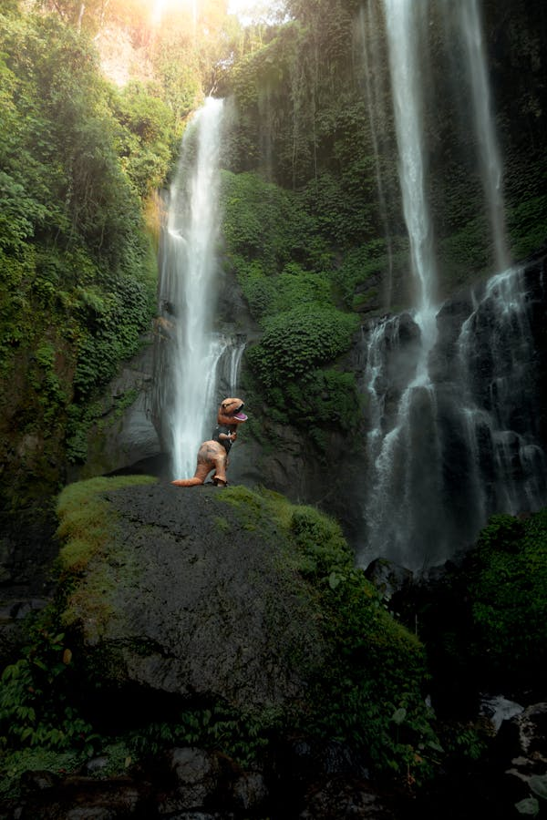

As a kenyan patriot, i pride myself in the beauty of our wildlife.
From the king of the jungle, the lion, to the tallest animal in the world,
the giraffe,a drive around the Mara would be very fulfilling. Seeing and experiencing the
wild that close.Did i mention the wildebeest migration? This 'event' happens annually.
It would be fascinating to watch the wildebeest cross from Kenya to Tanzania through the
Mara river. Going through all the predators eagerly waiting, hungry for the fresh prey
willingly into their territory. Being located in Narok county,
the Maasai people with their rich culture would be amazing to watch.
Activities to do in Maasai Mara
Game drive
Watch the wildebeest migration
Camping
Picture taking
Viewing birds
A lion walking in the MaraGiraffes walking towards a roadA cheetah The wildebeest seasonal migration in the MaraAn impala or Looibok in the Mra greenary
Chefchaouen(The blue Pearl),Morocco
The famous 'blue town' in Morocco, the town is painted blue to create a dreamlike structure.
The town is painted in different shades of blue which are so beautiful.
The town also has beautiful scenaries. The blue is a cultural symbolism of the sky,
ehichbwas brought about by the Jewish refugees in the early 1900s.
Activities to do in Chefchaouen
Try Moroccan food
View waterfalls (Ras El Maa waterfall)
Take pictures
Buy local items and artifacts
A hike to the Spanish mosque
The streets of the famous Blue cityA picture of the beautiful corridor creating a dreamlike effect in the townWhile the whole town is painted blue, this is one of the many staircases also painted blue The town of Chefchaouen A beautiful different view of the city painted blue
Ubud, Bali(Indonesia)
Ubud is a town in Bali known for its rice terraces, lush jungle and traditional art from Bali.
The whole town is beautiful if not fascinating.
Activities to do in Ubud
Walking through the rice terraces
Meditation
Visit temples in Bali
Visit the sacred monkey forest
Go to the campuhan ridge walk

Sekumpul Waterfall which is considered to be the mostt beautiful waterfall in BaliTegallalang Rice Terraces. They represent the Balinese culture.
They represent the Subak Irrigation system
Brahmavihara-Arama,
also known as Vihara Buddha Banjar due to its location in the Banjar DistrictThe luxury hotel, Four seasons, in the town Bali Sayan A footbridge in Bali showcasing the beautiful greenary
Paris
The wonderful 'city of love'. I feel like thats reason enought but its just not enough. Paris became a city
of interest for me after watching an animation series 'Miraculous Tales of Ladybug and Cat noir'. From
the animation, you get a glimpse of living in Paris. Of course i would also like to see the Eiffel tower up close.
Satisfying my sweet tooth and tastebuds with the French pastries would also be fulfilling.
Activities to do in Paris
Watch the Tower light up at night or climb it
Candle light dinner along the Seine river
Visit The Louvre Museum
Try French Pastries
A picnic at the Jardin du Luxembourg garden
The Louvre. The famous museum with multiple and valuable historical items. The famous 300m Eiffel tower named after its engineer Gustave Eiffel. River Seine flowing through the heart of ParisPont des Arts. The famous Locks bridge where couples put love locks on the bridge
and they the key into the river.
Jardin des Tuileries. This masterpiece was built as a palace
in 1564 but does not currently a palace.
Keukenhof gardens, Netherlands
Last but not least, my personal favourite and also the most important one, Keukenhof in Netherlands.
Tulips are my favourite flowers. Apparently, tulips are sensitive! They close up during the night
or when it rains, sassy right?? Something else, unlike roses, tulips are not your everyday kind of flower.
There are 3 famous places to see them and Keukenhof is on e of them. Wtching a whole field of tulips would be a dream come true
Activities to do in Keukenhof Garden
Cycle through the tulip fields
Explore the firled and the windmill
View the themed flowers
A whisper boat tour
Purple Tulips fieldA field of red and yellow TulipsA Field of mixed color Tulips and the windmillA yellow tulip in a field of unblossomed buds Yellow and Blue Tulip field